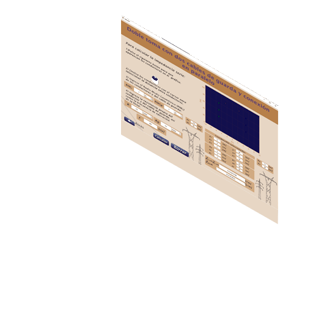
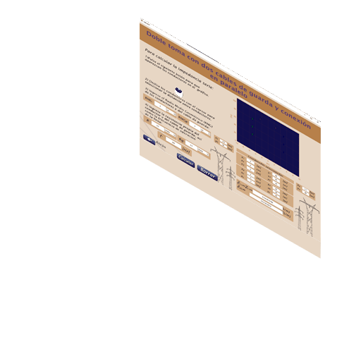
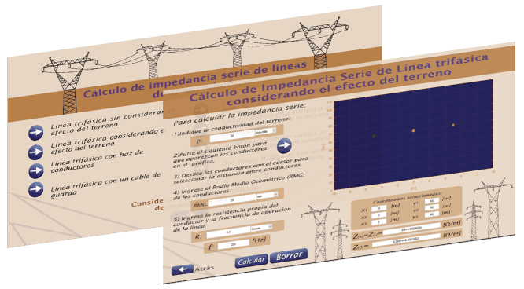
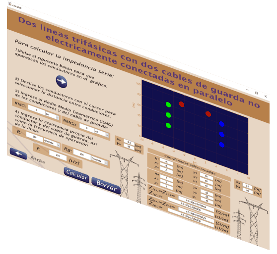

Transmission Line Series Impedance Calculator
By Gleysa Muñoz
Resume
Software designed to calculate Transmission Line Series Impedance with Matlab GUI. Transmission lines are characterized by a series resistance, inductance, and shunt capacitance per unit length. These values determine the power-carrying capacity of the transmission line and the voltage drop across it at full load. The DC resistance of a conductor is expressed in terms of resistively, length and cross sectional area. The resistively increases linearly with temperature over normal range of temperatures. If the resistively at one temperature and material temperature constant are known. AC resistance of a conductor is always higher than its DC resistance due to the skin effect forcing more current flow near the outer surface of the conductor. The higher the frequency of current, the more noticeable skin effect would be.
 

Transmission Line Impedance
It refers to the equivalent resistance of a transmission line if it were infinitely long, owing to distributed capacitance and inductance as the voltage and current “waves” propagate along its length at a propagation velocity equal to some large fraction of light speed.
The characteristic impedance (Z0) of a transmission line is the resistance it would exhibit if it were infinite in length. This is entirely different from leakage resistance of the dielectric separating the two conductors, and the metallic resistance of the wires themselves. Characteristic impedance is purely a function of the capacitance and inductance distributed along the line’s length and would exist even if the dielectric were perfect (infinite parallel resistance) and the wires superconducting (zero series resistance).
A transmission line is a pair of parallel conductors exhibiting certain characteristics due to distributed capacitance and inductance along its length.
When a voltage is suddenly applied to one end of a transmission line, both a voltage “wave” and a current “wave” propagate along the line at nearly light speed.
If a DC voltage is applied to one end of an infinitely long transmission line, the line will draw current from the DC source as though it were a constant resistance.
Velocity factor is a fractional value relating to a transmission line’s propagation speed to the speed of light in a vacuum. Values range between 0.66 and 0.80 for typical two-wire lines and coaxial cables. For any cable type, it is equal to the reciprocal (1/x) of the square root of the relative permittivity of the cable’s insulation.
Video Sample
A quick sample of the impedance calculator working.